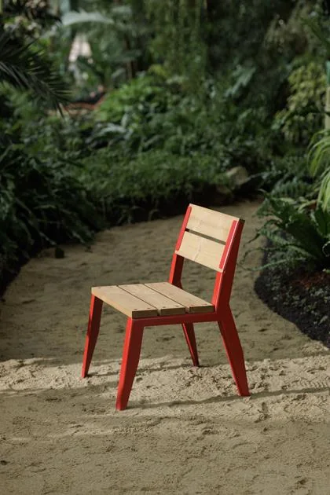
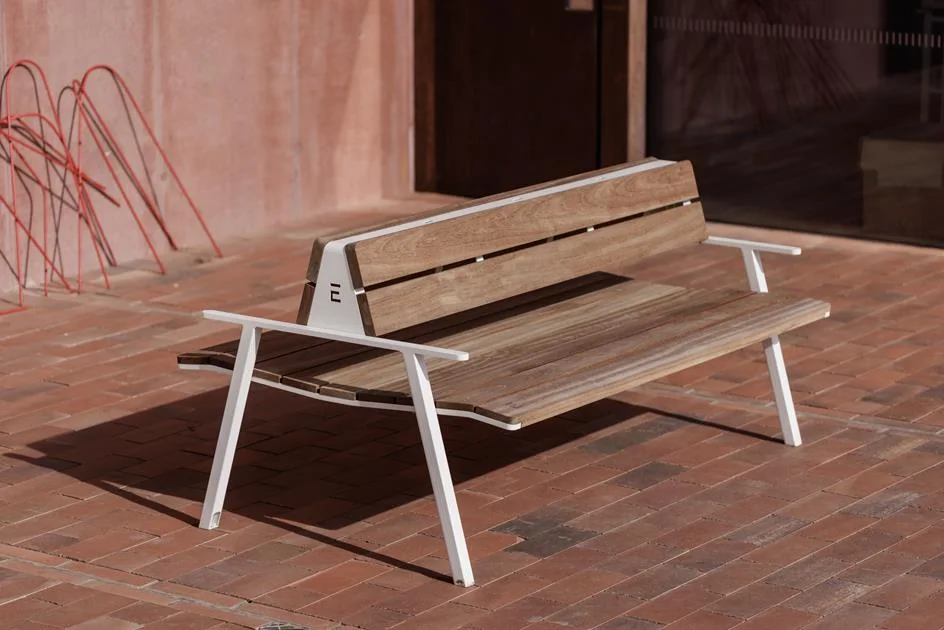

Блок «Стандарт / Art Déco» — 5 вариантов
Такой блок встанет на страницах категорий (скамейки, урны, лежаки…) сразу после верхнего экрана — чтобы посетитель сразу понимал: есть две линейки, и мог перейти в нужную. Art Déco — это название дизайн-серии; отличие чисто архитектурное и визуальное, поэтому упор на фото. Ниже — 5 готовых вариантов. Выберите один.

Рабочая
классика
57 моделей · сталь + дерево
Проверенные формы для дворов, парков и улиц. Доступно, надёжно, серийно.
Смотреть Стандарт →
Дизайн-
линия
46 моделей · авторские формы
То же производство и материалы — другой архитектурный силуэт под дизайн-код территории.
Смотреть Art Déco →


Рабочая классика
Сталь и брус хвойных пород. Серийные формы для дворов, парков и улиц — проверено сотнями объектов.


Дизайн-линия
Тот же завод и материалы — авторский архитектурный характер. Для набережных, дворов ЖК и премиального благоустройства.

Две линейки, один завод: Стандарт и Art Déco
Одинаковый металл и качество — разный архитектурный характер. Выберите свою.
Фото — временные (взяты из каталога). Финальные заменим на подборку из нескольких скамеек каждой серии. Скажите номер варианта — доработаю его финально и поставлю на все категории.